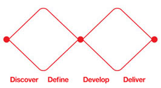

Last updated on Nov 07, 2016.
ICT for Development is an important area in which many Internet researchers are engaged. Most ICTD research involves human participants, often people who are marginalised (economically, politically and socially) and are therefore vulnerable. This vulnerability is further exacerbated as participants who may have limited experience of digital technologies are drawn in to 'becoming digital', often without knowing or understanding the possible consequences of that change. Therefore, ICTD research and practice demands careful ethical examination.
As an interdisciplinary endeavour, the standards and guidance that ICTD researchers and practitioners can turn to are as diverse as the disciplines from which they originate (e.g. anthropology, sociology, geography, HCI, computer science, information systems, engineering, community informatics, economics etc.). Most of those standards have been developed for very different situations and do not explicitly consider some of the challenges faced in ICTD research. For example, the challenges of the linguistic, cultural and economic differences between researchers and participants that are common in ICTD, the socio-historical interplay between culture, technology, communication and colonial legacies. Neither do they consider new challenges arising from new technologies such as large scale automated data collection (Big Data). The lack of clear guidance, reflection and ethical debate leaves participants, practitioners and researchers at risk of harm.
Developing some minimum standards offers an opportunity to: improve practice; better protect participants; protect the reputation of the field; guide new entrants to the field; to inform teaching of ICTD and Internet Research, and to make our practice more accountable.
An existing project to develop some minimum standards for ICTD is under way, with project progress recorded at http://ictdethics.wordpress.com This session invites delegates at IRC to explore the issues and bring their expertise to this effort. It is important that any set of standards for ethical conduct in ICTD should be shaped by diverse voices across different cultures.
Note: this is one of two proposals linked to the international #ICTDEthics project.
This is an interactive session following a 'double diamond' design process of four stages: discover, define, develop, deliver.

This session is intended to follow on from the #ICTDEthics session that we have proposed.
Stage 1: Discover - People's ethical reflection is grounded in stories and experiences. We will invite participants to share some of stories and reflections on ethical dilemmas or challenges they have encountered. This will be conducted in small groups, making notes on post-its.
Stage 2: Define - We will invite the whole group to participate in a clustering exercise mapping the stories to categories that are common in existing ethical frameworks (e.g. the Association of Internet Researchers' code of ethics, the Community Informatics code of ethics). This mechanism will be used to identify key areas that may require particular focus.
At this point, participants will be provided with an overview of the #ICTDEthics project to date, and the resources and issues under debate at: http://ictdethics.wordpress.com/.
Stage 3: Develop - Following this, each group will select one particular area of concern that has arisen from the earlier discussion and will use their own experiences, the AoIR & CI codes of ethics, and other resources to discuss and debate specific issues and to seek agreement on 'minimum standards' for that topic.
Stage 4: Deliver - In the final phase of the session, the groups will deliver and feed back their conclusions to the whole group.
http://ictdethics.wordpress.com is central to the documentation plan. The findings and outputs from the session will be shared with this international effort.
Post-it notes representing individual stories in stage 1 & 2. Where participants are willing, we will ask them to either retell for an audio record or write up their stories to be archived within the site.
In stages 3 and 4 feedback will be captured on the flip charts and (with the group's permission) the audio recording. The recordings will be used to summarise conclusions and share them via the site.
Not applicable.
Bidisha Chaudhuri is an Assistant Professor at the International Institute of Information Technology-Bangalore (IIIT-B), India. She is the author of the book “E-Governance in India: Interlocking Politics, Technology and Culture” (2014, London & New York: Routledge). Her research interests include e-governance, public policy reform, ICT for development, and South Asian politics. She is currently working on the interlinkages between learning and open information systems.
Andy Dearden is Professor of Interactive Systems Design in the Computing Department at Sheffield Hallam University, UK. His background is in Human Computer Interaction, and he has been active in ICTD research since 2006 and has collaborated with projects in India, Sri Lanka, East, West and South Africa. Together with Dorothea Kleine, Andy initiated the #ICTDEthics project and will participate electronically from the UK.
Linus Kendall is a PhD student at Sheffield Hallam University. His PhD project is entitled: Designing ICTs for social and situated learning in sustainable agricultural development. He is using ethnographic action research to explore these issues in collaboration with DRCSC, a sustainable development NGO based in West Bengal.
Dorothea Kleine is a Professorial Research Fellow in the Department of Geography at Sheffield University, UK, and leads the Digital Technologies, Data and Innovation theme at the Sheffield Institute of International Development. Dorothea’s research investigates sustainable human development, global justice, and the potential role of digital technologies in making progress towards these aims. Together with Andy Dearden, Dorothea initiated the #ICTDEthics project and will be participating electronically from the UK.
Janaki Srinivasan is an Assistant Professor at the International Institute of Information Technology Bangalore (IIITB). Her research interests include the political economy of development, social theory, critical information studies, ICTD, and qualitative research methods.